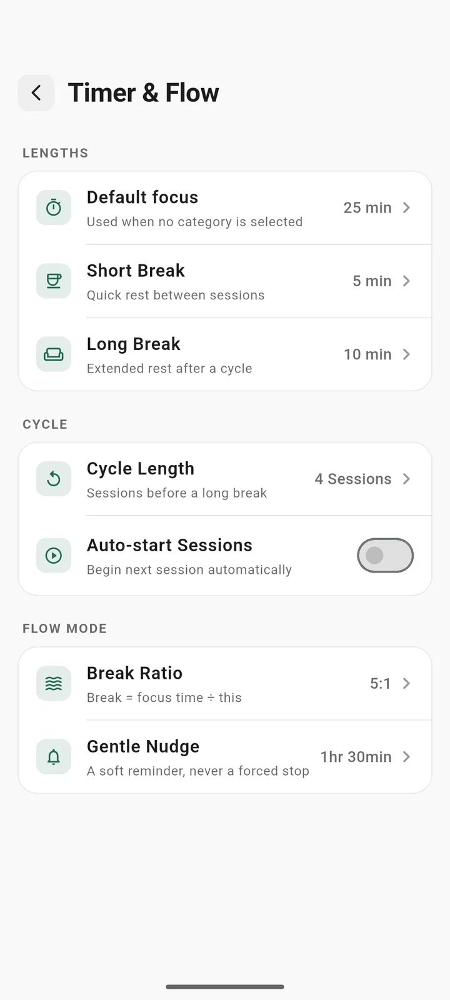

Pomodoro timer
Pomodoro, your way
Run the classic rhythm of 25 minutes of focus and a short break, or set your own. Pomorix keeps track of the cycle so you can keep your head in the work.
- Set your own focus, short break and long break lengths
- Choose how many sessions come before a long break
- Add or remove 5 minutes while a session is running
- Pause, resume, add time or finish right from the notification
- Auto-start the next session, or start each one yourself
